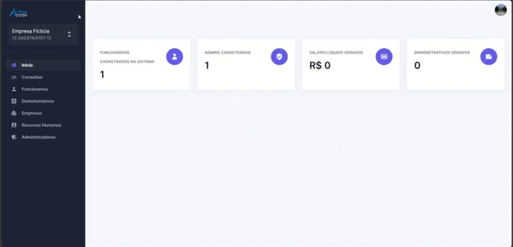
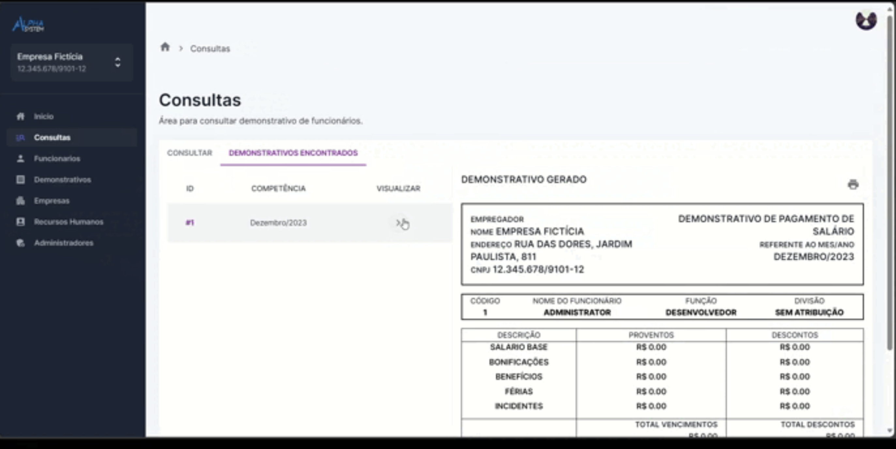

01
Cadastros estruturados
Empresas, funcionários, divisões e usuários organizados em fluxos claros de cadastro e manutenção.
O Alpha System é uma proposta de sistema para organizar rotinas de recursos humanos, conectando cadastro, permissões e geração de demonstrativos em um só fluxo.

gestão · RH · payrollO projeto nasceu de um problema simples: tornar as rotinas de folha e administração de pessoas mais organizadas, rastreáveis e acessíveis.
Empresas, funcionários, divisões e usuários organizados em fluxos claros de cadastro e manutenção.
Dados do funcionário reunidos para gerar demonstrativos de pagamento de forma consistente.
Permissões e autenticação pensadas para separar responsabilidades dentro do sistema.
Como TCC, o Alpha System foi desenvolvido com uma visão completa de produto: entendimento do problema, requisitos, modelagem, protótipos, testes e entregas por sprint.

O trabalho foi organizado em frentes complementares para explorar o produto em diferentes contextos de uso.
O Alpha System reúne produto, documentação e colaboração em uma experiência acadêmica completa.
Backlog, sprints, diagramas, casos de uso, testes, manuais e documentação teórica reunidos no repositório.
Explorar documentação ↗